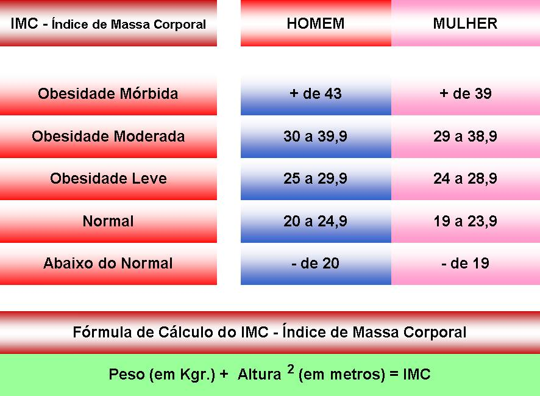

Cálculo de IMC
O (IMC) Índice de Massa Corporal, apesar de ter alguns problemas, ainda é o método mais rápido para
obter a informação se está abaixo do peso normal, acima do peso ideal ou obeso.
Peso(em KG):
Sexo:
Feminino
Masculino
Altura (Em Metros):
